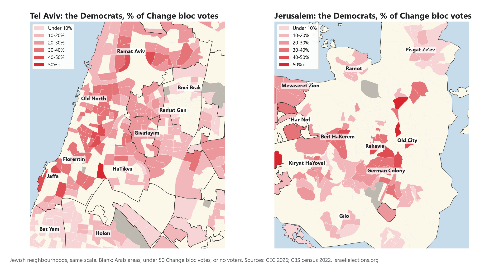
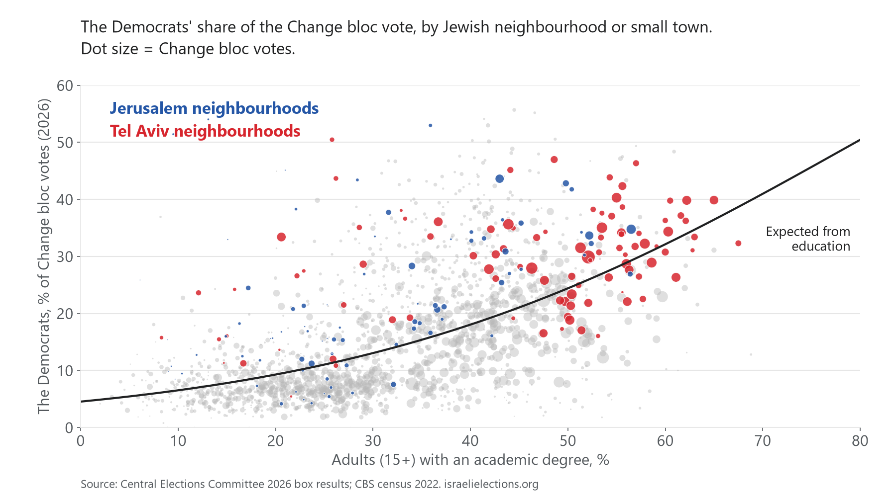
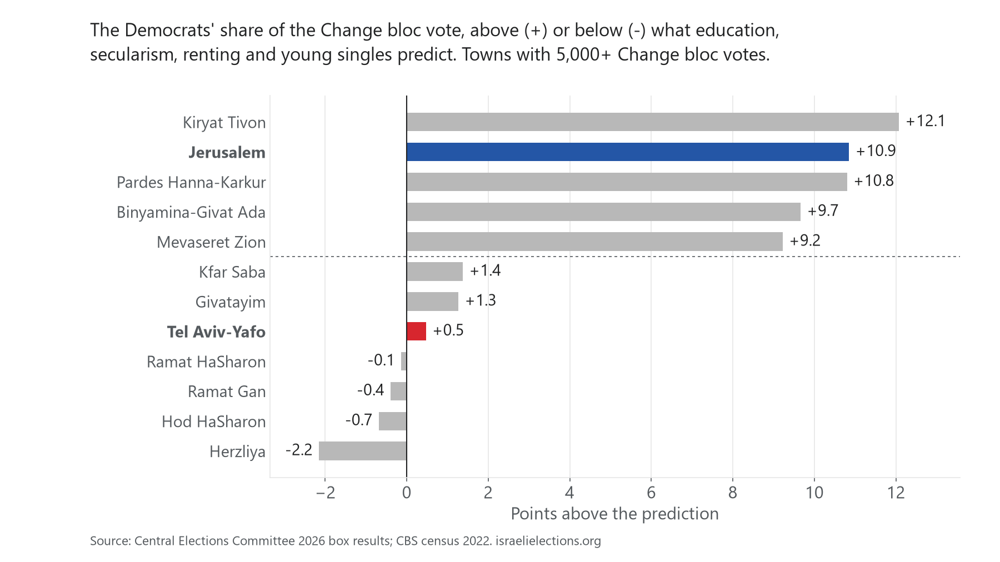

The Democrats in Tel Aviv and Jerusalem
Measured as a share of the Change bloc vote (Yashar!, Together, the Democrats and Yisrael Beytenu), the Democrats do much better in Tel Aviv than in Givatayim, Herzliya, Hod HaSharon and Kfar Saba. Most of that gap follows from who lives there: more graduates, more renters and fewer married young adults. Jerusalem is the real outlier: its Change voters lean to the Democrats about 11 points more than those factors predict.

Tel Aviv against the four cities
| Tel Aviv-Yafo | Givatayim, Herzliya, Hod HaSharon, Kfar Saba | Points of the gap explained | |
|---|---|---|---|
| The Democrats, % of Change bloc votes | 29.7 | 19.8 | 9.9 (the gap) |
| Adults with an academic degree, % | 48.6 | 42.0 | 3.5 |
| Households renting, % | 53.5 | 36.9 | 3.3 |
| Aged 18 to 34 and married, % | 18.6 | 23.3 | 1.8 |
| Secular (state kindergartens), % | 93.8 | 93.8 | 0.0 |
Figures weighted by Change bloc votes. Together the four explain about 8.5 of the 9.9 points.

Jerusalem
Jerusalem's Change voters live in less educated areas (37% graduates) yet gave the Democrats 25.5% of their vote, against 14.6% predicted by education, secularism, renting and young singles. The gap holds across 90% of its neighbourhoods and under every variation we tried (between 9 and 14 points), except one: counting Arab residents within 5 km cuts it to about 4. Jerusalem is the only big Jewish city next to a large Arab population, so these data cannot tell "Jerusalem" apart from "living near Arab neighbourhoods". Origin, age, income, city size and the Change bloc's own strength do not explain it.

Method
- Units: census 2022 statistical areas whose main religion is Jewish (combined areas as the census publishes them; small localities whole), with 50+ Change bloc votes. Votes: Central Elections Committee 2026 box results, each box placed in the area of its polling building.
- Model: fractional logit of the Democrats' share of Change bloc votes on the share of adults with a degree, the share of state (secular) kindergartens, the share of households renting and the share of 18 to 34 year olds who are married, weighted by Change bloc votes, errors clustered by locality. The "points explained" column moves Tel Aviv's areas to the four cities' average on each factor in turn (averaged over orders).
- Checked by two independent reviews. Tel Aviv's distance from the prediction runs from -1.5 to +2.5 points depending on how the model is set up; Jerusalem's from +9 to +14, or about +4 with Arab residents nearby.
- These compare neighbourhoods, not people, and a polling building is not always where its voters live. Census 2022 against a 2026 vote.